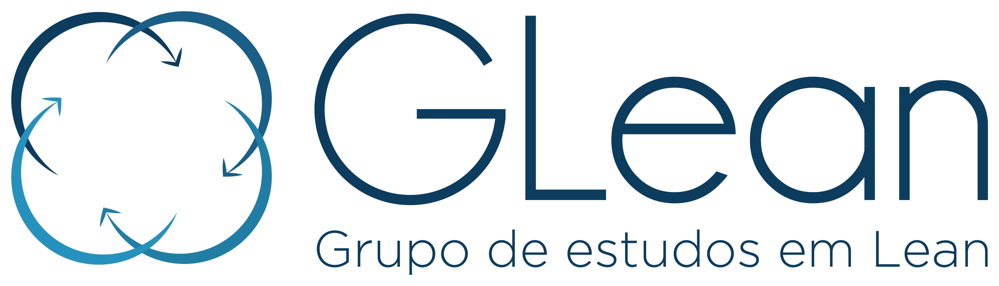

Tela apagada? Pode ser só a suspensão: aperte Espaço e faça o login. O Andon já estará ligado.
Aperte o botão de ligar e espere o Windows abrir.
Abra o ícone de internet com ⊞ Win+A e escolha a rede eduroam.
Usuário: nome.sobrenome
Senha: a senha padrão do Moodle. Enter para conectar.
Aperte ⊞ Win, digite energia e abra “Energia e suspensão” com Enter.
Com Tab, vá até cada tempo de tela e suspensão; com ↓ escolha Nunca e Enter.
Aperte ⊞ Win, digite chrome e aperte Enter.
Aperte Ctrl+L, digite glean.com.br/andon e Enter.
Aperte M: o rodapé mostra “microfone ativo”. Se pedir permissão: Tab até “Permitir” e Enter.
Aperte F11. Pronto: o Andon fica ligado sozinho.